-
Der Begriff der Dichte im Kontext des Städtebaus entwickelte sich im 19. Jahrhunderts aus drei Disziplinen heraus: Aus der Geografie, die Dichte als beschreibung von Gegenden und Gesellschaften nutzte, der Nationalökonomie, die Dichte im Zusammenhang mit Bevölkerungswachstum und Nahrung bzw. Innovation setzt und der Soziologie, die im 19. Jahrhundert eine erste Dichtehtheorie entwickelt. Diese Disziplinen prägen das Bild der Dichte im Städtebau und zeichnen über lange Zeit vor allem ein negatives Bild von hoher Dichte. Sie steht für mangelnde Hygiene, die schlechten Verhältnisse in den postindustriellen Innenstädten und der Angst vor Revolution. Das Bild der schlechten Dichte prägt somit ab den 1870er Jahren die Leitbilder des Städtebaus. Vor allem in konservativen Kreisen bleibt das Bild der schlechten Dichte lange bestehen, während Sozialreformer schon früh eine hohe Dichte als etwas positives auffassen. Das Bild der positiven Dichte beginnt aber erst Anfang der 1960er Jahre durch eine aufkommende Kritik am modernem Städtebau in die Köpfe vieler Planer zu rücken. Die Kritik an geringer Dichte und der Funktionstren - nung der Moderne legt den Grundstein für die Leitbilder, die hohe Dichte als Grundlage für lebendige Städte und das Entstehen von Innovationen vorraussetzten und führt dazu, dass Dichte heute unter Planern und Architekten als etwas positives aufgefasst wird.Die moralische Dichte (nach Durkheim 1893) beschreibt den Zustand einer Gesellschaft. Durkheim setzt die moralische Dichte in den Zusammenhang mit der (messbaren) materiellen Dichte. Nach seiner Theorie ist die moralische Dichte dort hoch, wo auch eine hohe materielle Dichte herrscht. Eine funktionierende Gesellschaft hat demnach eine hohe moralische Dichte.Die Charta von Athen ist ein 1933 auf dem internationalen Städtebaukongress CIAM verfasstes Dokument, dass die systematische Gleiderung einer Stadt in räumlich getrennte Nutzungseinheiten vorschlägt. Das daraus entstandene Leitbild der funktionalen Stadt prägte die Stadtentwicklung bis zum Ende des 20. Jahrhunderts.Die Lebensstile in Deutschland haben in den letzten Jahrzehnten eine Pluralisierung erfahren. Das in den 50er Jahren geltende Bild der Famile (Vater, Mutter und Kinder) wird dabei durch andere Lebensstile (z.B. Alleinerziehend, Single, Patchworkfamile etc.) abgelöst. Die Pluralisierung der Lebensstile hat unter anderem Auswirkungen auf die Zahl der Haushalte.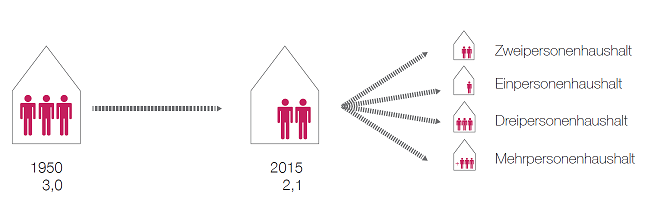Die Reurbanisierung beschreibt einen Prozess der Stadtentwicklung, bei dem die Kernstadt im Vergleich zu Ihrem Umland einen starken Bevölkerungs- und Beschäftigungszuwachs erfährt. Der Reurbanisierung geht für gewöhnlich eine Phase der Urbanisierung gefolgt von einer Phase der Suburbanisierung (Menschen ziehen in das Umland der Stadt) vorraus. Reurbanisierung und Suburbanisierung können dabei gleichzeitig in unterschiedlichem Maß ablaufen.
-
Die Wohnfläche beschreibt die Quatratmeterzahl, die durchschnittlich jeder Person zur Verfügung steht. Im Laufe der letzten 65 Jahre hat sich diese Zahl in Deutschland mehr als verdoppelt. Während 1950 jedem Deutschen noch 19 m² Wohnfläche zur Verfügung standen, sind es heute circa 46 m².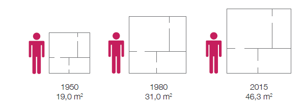Ein Haushalt beschreibt eine Wohneinheit unabhängig von deren Bewohneranzahl. Durch die Pluralisierung der Lebensstile hat sich die Zahl der in einem Haushalt lebenden Menschen verringert. Durch den Anstieg an Haushalten mit wenigen Bewohnern bei einer gleichbleibenden Bevölkerungszahl hat sich die Anzahl der Haushalte in Deutschland deshalb seid 1950 fast verdoppelt.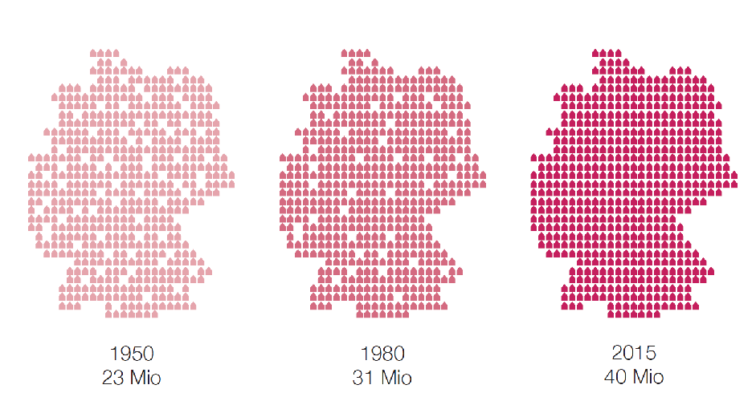Die Bevölkerungsdichte beschreibt das Verhältnis von Menschen zu einer festgelegten Fläche. Naturgemäß haben Städte die höchste Bevölkerungsdichte. Grundsätzlich spielt die Bevölkerungsdichte eine wichtige Rolle bei der Planung von Infrastruktur, da sich bestimmte Infrastrukturen (z.B. ein U-Bahn) erst ab einer bestimmten Anzahl an Nutzern rechnen. Die Bevölkerungszahl ( und damit auch die Bevölkerungsdichte) Deutschlands ist in den letzten 65 Jahren bei gleichbleibender Fläche gestiegen. Für die Zukunft wird eine Stagnation bzw. eine leichte Schrumpfung der Bevölkerung (abhängig von Migrationsbewegungen) prognostiziert.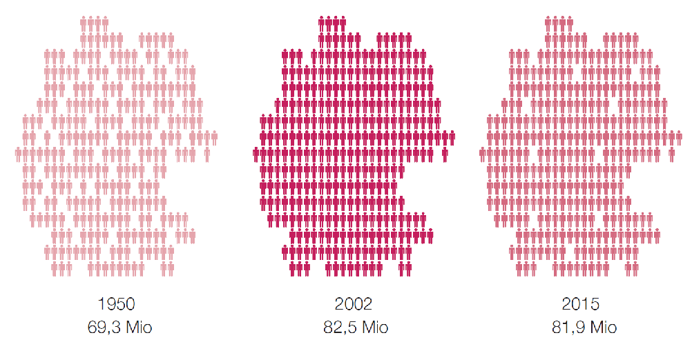
-
Das Baugesetzbuch beinhaltet die Grundlage für das Bauplanungsrecht in Deutschland. Es legt den gesetzlichen Rahmen für die Bauleitplanung, dem wichtigsten Planungswerkzeug zur Lenkung und Steuerung von städtebaulichen Entwicklung einer Gemeinde, sowie für das besondere Städtebaurecht, welches städtebauliche Sanierungs- und Entwicklungsmaßnamen in einer Gemeinde behandelt.Die Baunutzungsverordnung ist eine Rechtsverordnung, die die Art und Maßgabe einer baulichen Nutzung eines Grundstückes festlegt. Sie trat 1961 in Kraft und wurde seitdem nur geringfügig novelliert. Sie beinhaltet Festsetzungen zu Art und Maß der baulichen Nutzung sowie die Bauweise für Flächennutzungs- und Bebauungpläne.Im ersten Abschnitt der BauNVO wird die Art der baulichen Nutzung von zur Bebauung vorgesehenen Flächen geregelt. Dabei wird unterschieden zwischen Bauflächen für Flächennutzungspläne und Baugebieten für Bebauungspläne. In einzelnen Paragrafen wird festgelegt, welche Nutzungen in den Gebietstypen allgemein und ausnahmsweise zulässig sind.Im zweiten Abschnitt der BauNVO wird das Maß der baulichen Nutzung von zur Bebauung vorgesehenen Flächen geregelt. Die BauNVO setzt dafür für den Bebauungsplan festzusetzende Höchstwerte für die Höhe baulicher Anlagen, die GRF, die GFZ sowie die Baumassenzahl fest.Die GRZ (Grundflächenzahl) beschreibt das Verhältnis zwischen der überbauten Grundfläche und der Fläche des Grundstückes.
 Die GFZ (Geschossflächenzahl) beschreibt das Verhältnis zwischen der Grundstücksfläche und der Geschossfläche. Diese bildet sich aus der Fläche aller Vollgeschosse.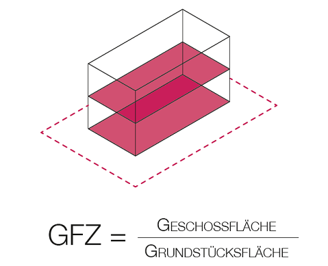Im November 2016 wurde vom Bundeskabinett der Gesetztesentwurf zur Einführung einer neuen Gebietskategorie in der BauNVO beschlossen. Das neue „urbane Gebiet“ soll es den Gemeinden erleichtern, Wohnen, Arbeiten und Kultur in den Innenstädten zu mischen und damit dem Leitbild der „Stadt der kurzen Wege“ gerecht zu werden und für bezahlbaren Wohnraum zu sorgen.Heute steht die BauNVO unter Stadtplanern stark in der Kritik, da sie 1961 zur Umsetzung des Leitbildes der funktional gegliederten Stadt eingeführt wurde. Durch die Unterteilung in Gebietskategorien ist es heute nur unter großem Aufwand möglich, innenstadttypische Nutzungen zu mischen und urbane, vielfältige Quartiere neu zu bauen.
Die GFZ (Geschossflächenzahl) beschreibt das Verhältnis zwischen der Grundstücksfläche und der Geschossfläche. Diese bildet sich aus der Fläche aller Vollgeschosse.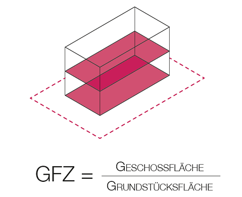Im November 2016 wurde vom Bundeskabinett der Gesetztesentwurf zur Einführung einer neuen Gebietskategorie in der BauNVO beschlossen. Das neue „urbane Gebiet“ soll es den Gemeinden erleichtern, Wohnen, Arbeiten und Kultur in den Innenstädten zu mischen und damit dem Leitbild der „Stadt der kurzen Wege“ gerecht zu werden und für bezahlbaren Wohnraum zu sorgen.Heute steht die BauNVO unter Stadtplanern stark in der Kritik, da sie 1961 zur Umsetzung des Leitbildes der funktional gegliederten Stadt eingeführt wurde. Durch die Unterteilung in Gebietskategorien ist es heute nur unter großem Aufwand möglich, innenstadttypische Nutzungen zu mischen und urbane, vielfältige Quartiere neu zu bauen.
-
Das Modell der Gartenstadt gilt als eines der einflussreichsten städtebaulichen Modelle des 20. Jahrhunderts. Entwickelt wurde es von dem Stenographen Ebenezer Howard um die Vorteile von städtischem und ländlichem Wohnen zu vereinen und die Nachteile auszuschließen. Die Newtowns der Nachkriegszeit und der Erfolg der Zwischenstadt sind nicht denkbar ohne Howards Konzept des Wohnen im Grünen. Die von Howard vorgeschlagenen Entlastungsstädte wurden bis in die 1970er/80er in ganz Europa umgesetzt und weiterentwickelt.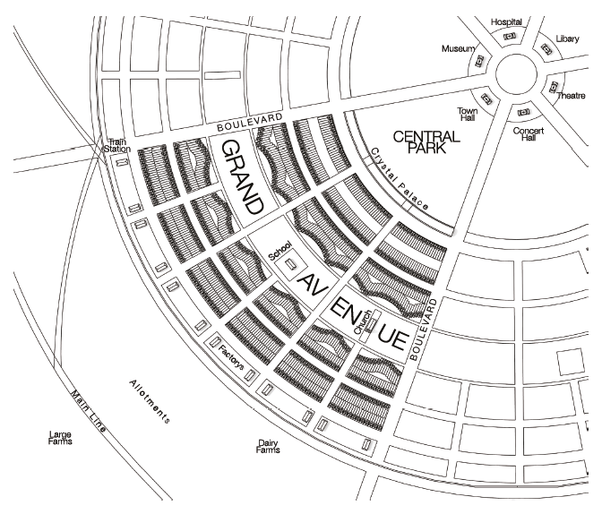Der britische Stenograph Ebenezer Howard (1850 -1928) war ein Sozialreformer und Utopist des 20. Jahrhunderts. Er galt als Kritiker der Lebensbedingengen in den Industriestädten und entwickelte in seinem Buch „The Garden Cities of Tomorrow“ 1902 das alternative Stadtsystem der Gartenstadt.Die Ville Contemporaine ist eine vom Architekten und Stadtplaner Le Corbusier 1922 entworfene Idealstatt. Sie kennzeichnet sich durch die Trennung der Funktionen Wohnen und Arbeiten, eine Teilung des Verkehrs auf verschiedene Ebenen sowie eine typologische Staffelung vom Zentrum mit Hochhäusern bis hin zur Vorstadt aus Einfamilienhäusern. Le Corbusier legt besonderen Wert auf eine Erhöhung der Dichte bei größeren Freiflächenanteilen. Der Grundriss der Ville Contemporaine folgt dabei strengen geometrischen Prinzipien.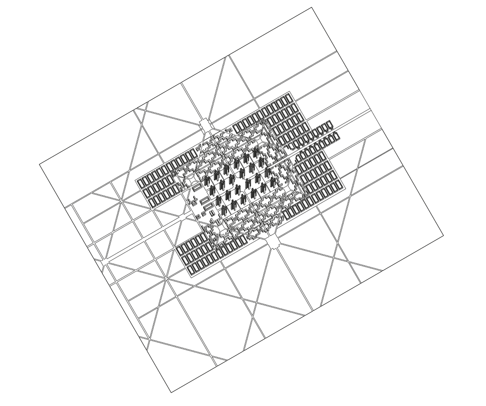Le Corbusier (1887 - 1965) war ein schweiterisch-französischer Architekt, Architekturtheoretiker, Stadtplaner, Maler und Designer. Er gehört zu den bedeutensten Persönlichkeiten der Architektur und Stadtplanung im 20. Jahrhundert. Seine radikalen Entwürfe für die Stadt der Zukunft hatten erheblichen Einfluss auf den Städtebau der Moderne, lösten gleichzeitig aber auch Kontroversen aus. Auch als Architekt schuf er Gebäude mit weltweitem Einfluss. Siebzehn von ihm entworfene Gebäude zählen heute zum UNESCO-Weltkulturerbe.Die Architekten und Stadtplaner Johannes Göderitz, Roland Reiner und Hubert Hoffmann entwickeln in den 1950er Jahren das Leitbild der gegliederten und aufgelockerten Stadt um den Bewohnern einer Stadt den Zugang zur Natur zu ermöglichen. Sie schlugen ein gegliedertes und aufgelockertes Stadtschema vor, dass sich aus einem organschen Gefüge verschiedener Stadtzellen zusammensetzt. Die Grundsätze der Nutzungstrennung sowie das ausbilden von Nachbarschaften übten einen großen Einfluss auf die Stadtplanung des 20. Jahrhunderts aus.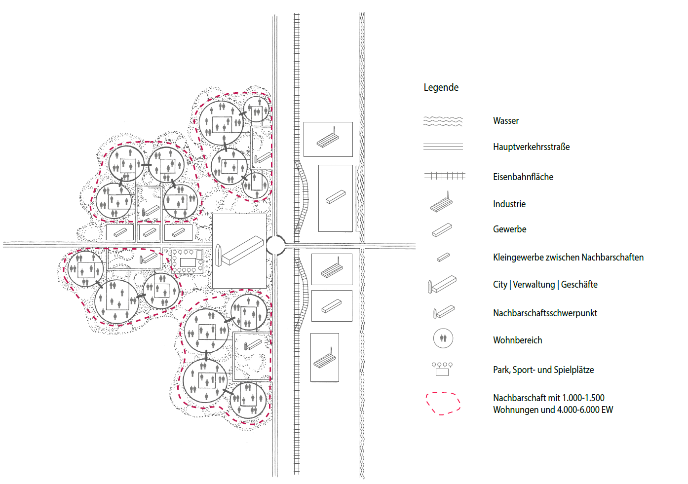Johannes Göderitz (1888 - 1978) war ein deutscher Architekt, Stadtplaner, Baubeamter und Hochschullehrer. Zusammen mit Huber Hoffmann und Roland Reiner entwickelt er das einflussreiche Modell der gegliederten und aufgelockerten Stadt, nach dem im 2. Weltkrieg zerstörte Städte in Deutschland wieder aufgebaut werden sollten. Er arbeitet unter anderem mit Bruno Taut bei der Stadt Magdeburg, als Stadtbaurat in Braunschweig, sowie an den den Hochschulen in München und Braunschweig. Für seine Leistungen als Hochschullehrer und in der großstädtischen Bauverwaltung erhielt er u.a. das große Bundesverdienstkreuz sowie den Ehrendoktortitel der TU Berlin.1959 entwickelt Hans Bernhard Reichow mit seinem Buch „Die autogerechte Stadt - Ein Weg aus dem Verkehrs-Chaos“ ein neues Planungsleitbild. Es beschrieb eine Stadt, die sich nach den Bedürfnissen des motorisierten Individualverkehrs richtet. Es wurde vielfach beim Wiederaufbau im Zweiten Weltkrieg zerstörter Städte realisiert. Alle Planungsmaßnahmen wurden dem ungehinderten Verkehrsflusses des Autos untergeordnet. Erreicht wurde dies unter anderem durch eine strikte Flächenzuweisung und Nutzungstrennung der Verkehrsteilnehmer. Heute ist das Leitbild stark in die Kritik geraten und wird nicht mehr realisiert.Jane Jacobs (1916 - 2006) war eine kanadische Autorin und Architekturkritikerin. Ihre Streitschrift „The Death and Life of great American Cities“ kritisiert Anfang der 1960er Jahre die vorherrschende Stadtplanung. Sie stellt eigene Beobachtung aus dichten Stadtteilen der gängigen Praxis der Kahlschlagsanierung gegenüber und pladiert für dichte, gemischte und kleinteilige Stadtviertel. Mit ihrem Buch beginnt eine Phase der Kritik an der autogerechten Stadt.Leslie Martin (1908 - 1999) beschäftigt sich Anfang der 70er Jahre zusammen mit Lionel March mit der Suche nach einer idealen Dichte für unsere Städte. Die beiden britischen Architekten gehen dabei mathematisch und rational vor. Sie stellen in verschiedenen Dichtestudien die Typologien Block und Turm gegenüber und untersuchen die Verteilung der Volumina auf gleicher Fläche. Als Ergebnis stellen sie fest, dass sich in einem Blocktypus die gleiche nutzbare Fläche in einem Drittel der Höhe wie in einem Turm-Typus unterbringen lässt. Gleichzeitig entstehen im Blocktypus große zusammenhängende Freiflächen, während sich die Freiflächen um die Türme durch die Straßen definiern.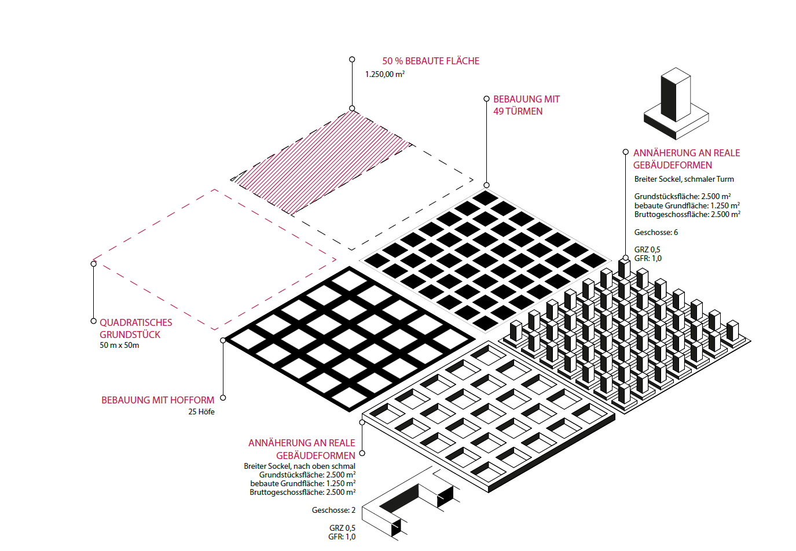Die internationale Bauaustellung in Berlin 1987 läutete einen städtebaulichen und architektonischen Paradigmenwechseln ein. Unter dem Leitbild der „kritischen Rekonstruktion“ beschäftigte sich die IBA-Neu(bau) mit der südlichen Friedrichsstadt und die IBA-Alt(- bau) unter dem Leitbild der „behutsamen Stadterneuerung“ mit Kreuzberg. Im Zentrum der IBA standen Themen wie Nachverdichtung, Nutzungsmischung, Instandsetzung und die Rückkehr zur Blockrandbebauung.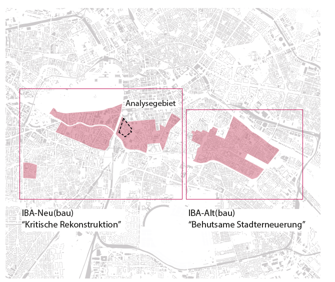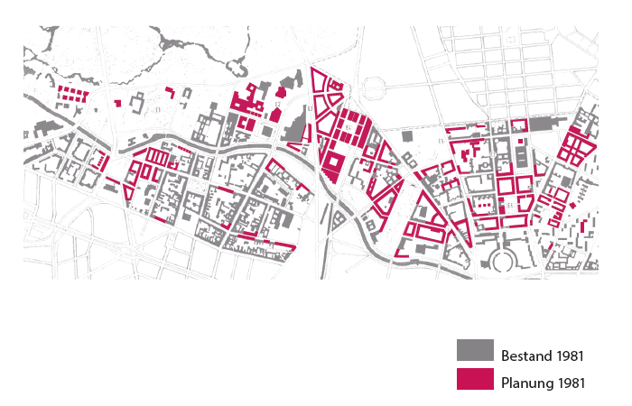Das Leitbild der „Stadt der kurzen Wege“ entstand in 1980er Jahren und bezeichnet eine Stadtstruktur, in der durch kurze Distanzen zwischen den Funktionen Wohnen, Arbeiten und Freizeit Verkehr vermieden werden und die Stadt fußgängerfreundlicher werden soll. Als Verraussetzung für eine Stadt der kurzen Wege gilt eine Nutzungsmischung sowie eine hohe Dichte. Das Leitbild wird bis heute in der Stadtplanung verwendet.Prof. Dr. phil. Nicolai Roskamm ist Professor für Planungstheorie, Stadtbaugeschichte und nachhaltigen Städtebau an der FH Erfurt. Er promovierte 2010 zum Thema „Dichte. Eine transdisziplinäre Dekonstruktion“, bei der er die Herkunft und die Interpretation des Dichtebegriffes aus Sicht verschiedener Disziplinen erforscht. Roskamm hat zahlreiche Artikel auf dem Gebiet der Stadt- und Raumforscher verröffentlicht, war als Hochschullehrer an der TU Berlin sowie der TU Warschau tätig und hat eine langjährige Berufserfahrung als Stadtplaner unter anderem als Mitglied der Freien Planungsgruppe Berlin.